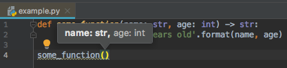

Have you ever found yourself repeating the same lines of code again and again? What if you could bundle up those repeated actions and give them a name—something you could reuse whenever needed?
This is what functions let you do!
In data science and data mining, writing your own functions is critical. As your analyses grow in complexity, so do your code bases. Functions allow you to:
Simplify repetitive tasks
Increase the clarity of your logic
Minimize bugs and errors
Make your code easier to test and maintain
This chapter will show you how to write your own functions—from the basics of syntax to more advanced ideas like type hints and anonymous functions. Whether you’re preparing data, building machine learning models, or conducting statistical analyses, writing custom functions will make you a more effective data scientist.
By the end of this lesson you will be able to:
Explain when to write functions
Discuss the difference between functions and methods
Define your own functions that includes:
Default arguments
Type hints
Exception handling
Docstrings
Discuss how Python scopes for variables to use in functions
Apply lambda (anonymous) functions
NoneVideo 🎥:
First, check out this video for a simple introduction to writing functions. Then move on to the lesson that follows which will reiterate and build upon these basic concepts.
Note📓 Follow Along in Colab!
As you read through this chapter, we encourage you to follow along using the companion notebook in Google Colab (or other editor of choice). This interactive notebook lets you run code examples covered in the chapter—and experiment with your own ideas.
import numpy as npimport pandas as pdfrom completejourney_py import get_datadf = get_data()['transactions']
/opt/hostedtoolcache/Python/3.13.5/x64/lib/python3.13/site-packages/completejourney_py/get_data.py:2: UserWarning: pkg_resources is deprecated as an API. See https://setuptools.pypa.io/en/latest/pkg_resources.html. The pkg_resources package is slated for removal as early as 2025-11-30. Refrain from using this package or pin to Setuptools<81.
from pkg_resources import resource_filename
18.2 When to write functions
You should consider writing a function whenever you’ve copied and pasted a block of code more than twice (i.e. you now have three copies of the same code). For example, take a look at this code. What does it do?
You might be able to puzzle out that this rescales each array to have a range from 0 to 1. But did you spot the mistake? I made an error when copying-and-pasting the code for the third array: I forgot to change an x[1] to an x[2]. Writing a function reduces the chance of this error and makes it more explicit regarding our intentions since we can name our action (rescale) that we want to perform:
Functions and methods are very similar, and beginners to object oriented programming languages such as Python often refer to them synonymously. Although they are very similar, it is always good to distinguish between the two as it will help you explain code situations more explicitly.
A method refers to a function which is part of a class. You access it with an instance or object of the class. A function doesn’t have this restriction: it just refers to a standalone function. This means that all methods are functions, but not all functions are methods.
As illustrated above, there can be functions and methods that behave in a similar manner. However, often, methods have special parameters that allow them to behave uniquely to the object they are attached to. For example, the sum() method for the Numpy array allows you to get the overall sum, sum of each column, and sum of each row. This would take more effort to compute with the stand alone function.
Nonetheless, being able to create stand alone functions is a critical task. And, if you delve into building your own object classes down the road, defining methods is a piece of cake if you know how to define stand alone functions.
18.4 Defining functions
There are four main steps to defining a function:
Use the keyword def to declare the function and follow this up with the function name.
Add parameters to the function: they should be within the parentheses of the function. End your line with a colon.
Add statements that the functions should execute.
End your function with a return statement if the function should output something. Without the return statement, your function will return an object None.
Of course, your functions will get more complex as you go along: you can add for loops, flow control, and more to it to make it more finegrained. Let’s build a function that finds the total sales for a store, for a given day. The parameters required for the function are the data frame being analyzed, the store_id, and the specific week for which we need the sales.
Define a function titled ratio that takes arguments x and y and returns their ratio, \(\frac{x}{y}\).
Now add a third variable digits that allows you to round the output to a specified decimal.
Try the above yourself and then see my approach here:
18.5 Parameters vs arguments
People often refer to function parameters and arguments synonymously but, technically, they represent two different things. Parameters are the names used when defining a function or a method, and into which arguments will be mapped. In other words, arguments are the things which are supplied to any function or method call, while the function or method code refers to the arguments by their parameter names.
Being specific about the term ‘parameters’ versus ‘arguments’ can be helpful when discussing specific details regarding a function or inputs, especially during debugging.
Python accepts a variety of parameter-argument calls. The following discusses some of the more common implementations you’ll see.
Keyword arguments
Keyword arguments are simply named arguments in the function call. Consider our store_sales() function, we can specify parameter arguments in two different ways. The first is positional, in which we supply our arguments in the same position as the parameter. However, this is less explicit and if we happen to switch our store and week argument placement then we may get different results then anticipated.
# implicitly computing store sales for store 46 during week 43store_sales(df, 46, 43)
np.float64(60.39)
# implicitly computing store sales for store 43 (does not exist) during week 46store_sales(df, 43, 46)
np.float64(0.0)
Using keyword, rather than positional, arguments makes your function call more explicit and allows you to specify them in different orders.
Per the Zen of Python, ‘explicit is better than implicit’.
# explicitly computing store sales for store 46 during week 43store_sales(data=df, week=43, store=46)
np.float64(60.39)
Default arguments
Default arguments are those that take a default value if no argument value is passed during the function call. You can assign this default value by with the assignment operator =, just like in the below example. For example, if your analysis routinely analyzes transactions for all quantities but sometimes you only focus on sales for when quantity purchased meets some threshold, you could add a new parameter with a default value.
Default arguments should be placed after parameters with no defaults assigned in the function call.
def store_sales(data, store, week, qty_greater_than=0): filt = (data['store_id'] == store) & (data['week'] == week) & (data['quantity'] > qty_greater_than) total_sales = data['sales_value'][filt].sum()return total_sales# you do not need to specify an input for qty_greater_thanstore_sales(data=df, store=309, week=48)
np.float64(395.6)
# but you can if you want to change it from the defaultstore_sales(data=df, store=309, week=48, qty_greater_than=2)
np.float64(92.73)
*args and **kwargs
*args and **kwargs allow you to pass a variable number of arguments to a function. This can be usefule when you do not know before hand how many arguments will be passed to your function by the user or if you want to allow users to pass arguments through to an embedded function.
Just an FYI that it is not necessary to write *args or **kwargs. Only the * (asterisk) is necessary. You could have also written *var and **vars. Writing *args and **kwargs is just a convention established in the Python community.
*args is used to send a non-keyworded variable length argument list to the function. When the function is called, Python collects the *args values as a tuple, which can be used in a similar manner as any other tuple functionality (i.e. indexing, for looped) For example, we can let the user supply as many string inputs to the very useful yell() function by using *args.
The special syntax **kwargs in function definitions in python is used to pass a keyworded, variable-length argument list. The reason is because the double star allows us to pass through keyword arguments (and any number of them). Python collects the **kwargs into a new dictionary, which can be used for any normal dictionary functionality.
# **kwargs just creates a dictionarydef students(**kwargs):print(kwargs)students(student1='John', student2='Robert', student3='Sally')
# we can use this dictionary however necessarydef print_student_names(**kwargs):for key, value in kwargs.items():print(f'{key} = {value}')print_student_names(student1='John', student2='Robert', student3='Sally')
student1 = John
student2 = Robert
student3 = Sally
Type hints
Python 3.5 added a new library called typing that adds type hinting to Python. Type hinting is part of a larger functionality called Type Checking (see this tutorial for a comprehensive Type Checking guide). Type hinting provides a way to help users better understand what type of arguments a function takes and the expected output.
For example, let’s look at a simple function:
def some_function(name, age):returnf'{name} is {age} years old'some_function('Tom', 27)
'Tom is 27 years old'
In the above function we simply expect the user to insert the proper type of arguments and to realize the output will be a string. Now, this isn’t that challenging because its a small and simple function but as our functions get more complex it is not always easy to decipher what type of arguments should be passed and what the output will be.
We can hint to the user this information with type hints by re-writing the function as below. Here, we are hinting that the name argument should be a string, age should be an integer, and the output will be a string (-> str).
def some_function(name: str, age: int) ->str:returnf'{name} is {age} years old'some_function('Tom', 27)
'Tom is 27 years old'
Now, when you look at the function documentation, you can quickly see the type hints (we’ll see additional ways to improve function documentation in the Docstrings section).
help(some_function)
Help on function some_function in module __main__:
some_function(name: str, age: int) -> str
Even better, most IDEs support type hints so that they can give you feedback as you are typing:

Figure 18.1: Type hints often show up when you hover over the function in most IDEs.
When declaring types, you can use any of the built-in Python data types. This includes, but is not limited to:
int, float, str, bool
tuple, list, set, dict, array
frozenset
Optional
Iterable, Iterator
and many more!
You can also declare non-built-in data types such as Pandas and Numpy object types. For example, we can re-write our store_sales() function with type hints where we hint that data should be a pd.DataFrame.
Note that pd.DataFrame assumes that you imported the Pandas module with the pd alias.
Add type hints that specify x and y to be numeric, digits to be int and the output returned to be float.
Try the above yourself and then see my approach here:
18.6 Docstrings
Type hints are great for guiding users; however, they only provide small hints. Python docstrings are a much more robust way to document a Python function (docstrings can also be used to document modules, classes, and methods). Docstrings are used to provide users with descriptive information about the function, required inputs, expected outputs, example usage and more. Also, it is a common practice to generate online (html) documentation automatically from docstrings using tools such as Sphinx.
See the Pandas API reference for the various Pandas functions/methods/class for example Sphinx documentation that is built from docstrings.
Docstrings typically consist of a multi-line character string description that follows the header line of a function definition. The following provides an example for a simple addition function. Note how the docstring provides a summary of what the function does, information regarding expected parameter inputs, what the returned output will be, a “see also” section that lets users know about related functions/methods (this can be skipped if not applicable), and some examples of implementing the function.
def store_sales(data: pd.DataFrame, store: int, week: int) ->float:""" Compute total store sales. This function computes the total sales for a given store and week based on a user supplied DataFrame that contains sales in a column named `sales_value`. Parameters ---------- data : DataFrame Pandas DataFrame store : int Integer value representing store number week : int Integer value representing week of year Returns ------- float A float object representing total store sales See Also -------- store_visits : Computes total store visits Examples -------- >>> store_sales(data=df, store=309, week=48) 395.6 >>> store_sales(data=df, store=46, week=43) 60.39 """ filt = (data['store_id'] == store) & (data['week'] == week) total_sales = data['sales_value'][filt].sum()return total_sales
There are some typical Pythonic conventions used when writing docstrings. Rather than reiterate them here, we highly suggest using the Pandas and Numpy docstring guide standards when writing your docstrings.
Knowledge check
NoneTry it yourself:
Go back to the ratio function you created in the last knowledge check and add docstrings. Be sure to include a general description of what the function does, documentation on the parameters and return output, along with including examples.
Try the above yourself and then see my approach here:
18.7 Errors and exceptions
For functions that will be used over and over again, and especially for those used by someone other than the creator of the function, it is good to include procedures to check for errors that may derail function execution. This may include ensuring the user supplies proper argument types, the computation can perform with the values supplied, or even that execution can be performed in a reasonable amount of time.
This falls under the umbrella of exception handling and is actually far broader than what we can cover here. In this section, we’ll demonstrate some of the basics.
Validating arguments
A common problem is when the user supplies invalid argument types or values. Although we have seen how to use type hints and docstrings to inform users, we can also include useful exception calls for when users supply improper argument types and values. For example, the following will check if the arguments of the correct type by using isinstance and, if they are not, we raise an Exception and include an informative error.
def store_sales(data: pd.DataFrame, store: int, week: int) ->float:# argument validationifnotisinstance(data, pd.DataFrame): raiseException('`data` should be a Pandas DataFrame')ifnotisinstance(store, int): raiseException('`store` should be an integer')ifnotisinstance(week, int): raiseException('`week` should be an integer')# computation filt = (data['store_id'] == store) & (data['week'] == week) total_sales = data['sales_value'][filt].sum()return total_salesstore_sales(data=df, store='309', week=48)
---------------------------------------------------------------------------Exception Traceback (most recent call last)
Cell In[24], line 12 9 total_sales = data['sales_value'][filt].sum()
10return total_sales
---> 12store_sales(data=df,store='309',week=48)
Cell In[24], line 4, in store_sales(data, store, week) 1defstore_sales(data: pd.DataFrame, store: int, week: int) ->float:
2# argument validation 3ifnotisinstance(data, pd.DataFrame): raiseException('`data` should be a Pandas DataFrame')
----> 4ifnotisinstance(store, int): raiseException('`store` should be an integer')
5ifnotisinstance(week, int): raiseException('`week` should be an integer')
7# computationException: `store` should be an integer
Note that Exception() is used to create a generic exception object/output. Python has many built-in exception types that can be used to indicate a specific error has occured. For example, we could replace Exception() with TypeError() in the previous example to make it more specific that the error is due to an invalid argument type.
def store_sales(data: pd.DataFrame, store: int, week: int) ->float:# argument validationifnotisinstance(data, pd.DataFrame): raiseTypeError('`data` should be a Pandas DataFrame')ifnotisinstance(store, int): raiseTypeError('`store` should be an integer')ifnotisinstance(week, int): raiseTypeError('`week` should be an integer')# computation filt = (data['store_id'] == store) & (data['week'] == week) total_sales = data['sales_value'][filt].sum()return total_salesstore_sales(data=df, store='309', week=48)
---------------------------------------------------------------------------TypeError Traceback (most recent call last)
Cell In[25], line 12 9 total_sales = data['sales_value'][filt].sum()
10return total_sales
---> 12store_sales(data=df,store='309',week=48)
Cell In[25], line 4, in store_sales(data, store, week) 1defstore_sales(data: pd.DataFrame, store: int, week: int) ->float:
2# argument validation 3ifnotisinstance(data, pd.DataFrame): raiseTypeError('`data` should be a Pandas DataFrame')
----> 4ifnotisinstance(store, int): raiseTypeError('`store` should be an integer')
5ifnotisinstance(week, int): raiseTypeError('`week` should be an integer')
7# computationTypeError: `store` should be an integer
We can expand this as much as necessary. For example, say we want to ensure users only use a store value that exists in our data. Currently, if the user supplies a store value that does not exist (i.e. 35), they simply get a return value of 0.
store_sales(data=df, store=35, week=48)
np.float64(0.0)
We can add an if statement to check if the store number exists and supply an error message to the user if it does not:
def store_sales(data: pd.DataFrame, store: int, week: int) ->float:# argument validationifnotisinstance(data, pd.DataFrame): raiseTypeError('`data` should be a Pandas DataFrame')ifnotisinstance(store, int): raiseTypeError('`store` should be an integer')ifnotisinstance(week, int): raiseTypeError('`week` should be an integer')if store notin data.store_id.unique():raiseValueError(f'`store` {store} does not exist in the supplied DataFrame')# computation filt = (data['store_id'] == store) & (data['week'] == week) total_sales = data['sales_value'][filt].sum()return total_salesstore_sales(data=df, store=35, week=48)
---------------------------------------------------------------------------ValueError Traceback (most recent call last)
Cell In[27], line 15 12 total_sales = data['sales_value'][filt].sum()
13return total_sales
---> 15store_sales(data=df,store=35,week=48)
Cell In[27], line 7, in store_sales(data, store, week) 5ifnotisinstance(week, int): raiseTypeError('`week` should be an integer')
6if store notin data.store_id.unique():
----> 7raiseValueError(f'`store` {store} does not exist in the supplied DataFrame')
10# computation 11 filt = (data['store_id'] == store) & (data['week'] == week)
ValueError: `store` 35 does not exist in the supplied DataFrame
Assert statements
Python’s assert statement is a debugging aid that tests a condition. If the condition is true, it does nothing and your program just continues to execute. But if the assert condition evaluates to false, it raises an AssertionError exception with an optional error message. This seems very similar to the example in the last section where we checked if the supplied store ID exists. However, the proper use of assertions is to inform users about unrecoverable errors in a program. They’re not intended to signal expected error conditions, like “store ID not found”, where a user can take corrective action or just try again.
Another way to look at it is to say that assertions are internal self-checks for your program. They work by declaring some conditions as impossible in your code. If one of these conditions doesn’t hold that means there’s a bug in the program.
For example, say you have a program that automatically applies a discount to product and you eventually write the following apply_discount function:
Notice the assert statement in there? It will guarantee that, no matter what, discounted prices cannot be lower than $0 and they cannot be higher than the original price of the product.
Let’s make sure this actually works as intended. You can see that the second example throws an AssertionError
# 25% off 3.50 should equal 2.62milk = {'name': 'Chocolate Milk', 'price': 3.50}apply_discount(milk, 0.25)
2.62
# 200% discount is not allowedapply_discount(milk, 2.00)
---------------------------------------------------------------------------AssertionError Traceback (most recent call last)
Cell In[30], line 2 1# 200% discount is not allowed----> 2apply_discount(milk,2.00)
Cell In[28], line 3, in apply_discount(product, discount) 1defapply_discount(product, discount):
2 price =round(product['price'] * (1.0- discount), 2)
----> 3assert0<= price <= product['price']
4return price
AssertionError:
In the above example, we simply got an AssertionError but no message to help us understand what caused the error. The assert statement follows the syntax of assert condition, message so we can add an informative message at the end of our assert statement.
In the prior sections, we looked at ways to identify errors that may occur. The result of our exception handling is to signal an error occurred and stop the program. However, there are often times when we do not want to stop the program. For example, if the program has a database connection that should be closed after execution then we need our program to continue running even if an error occurs to ensure the connection is closed.
The try except procedure allows us to try execute code. If it works, great! If not, rather than just throw an exception error, we define what the program should continue to do. For example, the following tries the apply_discount() function with a pre-defined discount value. If it throws and exception then we adjust the discount value (if discount is greater than 100% of product price we adjust it to the largest acceptable value, if its less than 0 we just set it to 0%).
# this discount is created somewhere else in the programdiscount =2# if discount causes an error adjust ittry: apply_discount(milk, discount)exceptException:if discount >1: discount =0.99if discount <0: discount =0 apply_discount(milk, discount)
The try except procedure allows us to include as many except statements as necessary for different types of errors (think of them like elifs). For example, the following illustrates how we could have different types of code execution for a TypeError, a ValueError, and then the final else statement captures all other errors.
This procedure will run in order, consequently you want to have the most specific exception handlers first followed by more general exception handlers later on.
try: store_sales(data=df, store=35, week=48)exceptTypeError:print('do something specific for a `TypeError`')exceptValueError:print('do something specific for a `ValueError`')else:print('do something specific for all other errors')
do something specific for a `ValueError`
Lastly, we may have a certain piece of code that we always want to ensure gets ran in a program. For example, we may need to ensure a database connection or file is closed before an error is thrown. The following illustrates how we can add a finally at the end of our try except procedure. This finally will always be ran. If the code in the try clause runs without error, the finally code chunk will run after the try block. If an error occurse, the finally code chunk will run before the relevant except code chunk.
try: store_sales(data=df, store=35, week=48)exceptTypeError:raiseexceptValueError:raisefinally:print('Code to close database connection')
Code to close database connection
---------------------------------------------------------------------------ValueError Traceback (most recent call last)
Cell In[34], line 2 1try:
----> 2store_sales(data=df,store=35,week=48) 3exceptTypeError:
4raise
Cell In[27], line 7, in store_sales(data, store, week) 5ifnotisinstance(week, int): raiseTypeError('`week` should be an integer')
6if store notin data.store_id.unique():
----> 7raiseValueError(f'`store` {store} does not exist in the supplied DataFrame')
10# computation 11 filt = (data['store_id'] == store) & (data['week'] == week)
ValueError: `store` 35 does not exist in the supplied DataFrame
Knowledge check
NoneTry it yourself:
Going back to the ratio function:
Add a procdure to validate that x and y inputs are numeric and digits is an integer.
Add a try and except procedure where if a TypeError is thrown for digits because it is a float then the digits value is rounded to the nearest integer and applied.
Try the above yourself and then see my approach here:
18.8 Scoping
Scoping refers to the set of rules a programming language uses to lookup the value to variables and/or symbols. The following illustrates the basic concept behind the lexical scoping rules that Python follows. In short, Python follows a nested environment structure and uses what is commonly referred to as the LEGB search rule:
Search local scope first,
then the local scopes of enclosing functions,
then the global scope,
and finally the built-in scope
Searching for variables
What exactly does this mean? A function has its own environment and when you assign an argument in the def header of the function, the function creates a separate environment that keeps that variable separate from any variable in the global environment. This is why you can have an x variable in the global environment that won’t be confused with an x variable in your function:
x =84def func(x):return x +1func(x =50)
51
However, the function environment is only active when called and all function variables are removed from memory after being called. Consequently, you can continue using x that is contained in the global environment.
x
84
However, if a variable does not exist within the function, Python will look one level up to see if the variable exists. In this case, since y is not supplied in the function header, Python will look in the next environment up (global environment in this case) for that variable:
y ='Boehmke'def func(x):return x +' '+ yfunc(x ='Brad')
'Brad Boehmke'
The same will happen if we have nested functions. Python will search in enclosing functions in a hierarchical fashion until it finds the necessary variables. In this convoluted procedure…
y is a global variable,
x & sep are local variables to the my_name function,
and my_paste has no local variables,
the my_name function gets y from the global environment,
and the my_paste function gets all its inputs from the my_name environment.
We do not recommend that you write functions like this. This is primarily only for explaining how Python searches for information, which can be helpful for debugging.
y ='Boehmke'def my_name(sep): x ='Brad'def my_paste():return x + sep + yreturn my_paste()my_name(sep=' ')
'Brad Boehmke'
Changing variables
It is possible to change variable values that are outside of the active environment. This is rarely necessary, and is usually not good practice, but it is good to know about. For example, the following changes the global variable y by including the keyword-variable statement global y prior to making the assignment of the new value for y.
The same can be done with changing values in nested functions; however, you would use the keyword nonlocal to change the value of an enclosing function’s local variable.
y =8451def convert(x): x =str(x) firstpart, secondpart = x[:len(x)//2], x[len(x)//2:]global y y = firstpart +'.'+ secondpartreturn yconvert(8451)
'84.51'
y
'84.51'
18.9 Anonymous functions
So far we have been discussing defined functions; however, Python allows you to generate anonymous functions on the fly. These are often referred to as lambdas. Lambdas allow for an alternative approach when creating short and simple functions that are only used once or twice.
For example, the following two functions are equivalent:
# defined functiondef func(x, y, z):return x + y + z# lambda function lambda x, y, z: x + y + z
Note how the lambda’s body is a single expression and not a block statement. This is a requirement, which typically restricts lambdas to very short, concise function calls. The best use case for lambda functions are for when you want a simple function to be anonymously embedded within a larger expressions. For example, say we wanted to loop over each item in a list and apply a simple square function, we could accomplish this by supplying a lambda function to the map function. map just iterates over each item in an object and applies a given function (you could accomplish the exact same with a list comprehension).
Another good example is the following one you already lesson 6a where we apply a lambda function to assign ‘high value’ for each transaction where sales_value is greater than 10 and ‘low value’ for all other transactions.
( df['sales_value'] .apply(lambda x: 'high value'if x >10else'low value'))
0 low value
1 low value
2 low value
3 low value
4 low value
...
1469302 low value
1469303 low value
1469304 low value
1469305 low value
1469306 low value
Name: sales_value, Length: 1469307, dtype: object
Here is another example where we group by basket_id and then apply a lambda function to compute the average cost per item in each basket.
/tmp/ipykernel_12867/1550772873.py:4: FutureWarning: DataFrameGroupBy.apply operated on the grouping columns. This behavior is deprecated, and in a future version of pandas the grouping columns will be excluded from the operation. Either pass `include_groups=False` to exclude the groupings or explicitly select the grouping columns after groupby to silence this warning.
.apply(lambda x: (x['sales_value'] / x['quantity']).mean())
Let’s focus on the transaction timestamp for each transaction (df['transaction_timestamp']). Use the .apply() method along with a lambda function to assign each transaction to ‘weekday’ or ‘weekend’. To do this check out the .day_name() method (i.e. df['transaction_timestamp'][0].day_name())
18.10 Summary
Writing your own functions is one of the most essential skills for any data scientist. In this chapter, you learned how to encapsulate your logic, reduce repetition, and build cleaner, more modular code through custom function definitions.
We began by discussing when and why to write functions, especially when working on complex data analysis tasks that benefit from reusability and clarity. You saw how functions differ from methods and how they support both simple and advanced programming constructs.
You learned how to:
Define functions using the def keyword, including parameters and return values.
Use keyword arguments and default arguments to make your functions more flexible and explicit.
Leverage *args and **kwargs to support variable-length argument lists for more general-purpose tools.
Add type hints to clarify what types of inputs a function expects and what it returns—great for documentation and collaboration.
Document your functions with docstrings, following common Python conventions that enhance readability and support automated documentation tools.
Apply error handling techniques using raise, try-except, assert, and custom error messages to make your functions more robust and user-friendly.
Understand Python’s variable scoping rules, including the LEGB rule (Local, Enclosing, Global, Built-in), and how variables are resolved when functions are nested.
Create concise anonymous functions (a.k.a. lambda functions) and apply them within higher-order functions like map, apply, and groupby.
Throughout the chapter, you saw realistic examples related to store sales and transaction data, reinforcing the importance of custom functions in real-world data mining and analysis workflows. Whether you’re cleaning data, transforming values, calculating metrics, or building more advanced analytics pipelines, your ability to write well-structured functions will directly improve the quality and maintainability of your work.
In short, functions are foundational to writing professional, efficient, and reusable Python code—skills that will serve you across any domain of data science.
18.11 Exercise: Practicing Function Writing and Application
In this exercise set, you’ll practice defining and applying custom Python functions, using type hints and docstrings, and leveraging methods like .apply() to work with real-world data. These tasks will help solidify your understanding of functions and how to use them in data cleaning, feature engineering, and exploratory analysis workflows.
You can run these exercises in your own Python editor or in the companion notebook.
Tip💡 Stuck or Unsure?
Use ChatGPT, GitHub Copilot, or any other AI coding assistant to debug your code or talk through your logic. It’s a great way to reinforce concepts and practice problem solving.
None1. Load and Inspect the Data
Download the companies.csv dataset and load it into a DataFrame. This dataset contains company names and financial attributes.
Inspect the first few rows. What columns are available?
None2. Define the is_incorporated() Function
Write a function is_incorporated(name) that checks whether the input string name contains the substring "inc" or "Inc". If either appears in the name, return True; otherwise return False.
Now update your is_incorporated() function to include:
A type hint for the name parameter and the return type
A docstring describing what the function does, the input parameter, and the return value
Use the help() function or hover in your IDE to verify the documentation.
None4. Apply the Function with a Loop
Use a for loop to iterate through the Name column of the companies DataFrame. For each value, call your is_incorporated() function and print the company name along with whether it’s incorporated.
Your output might look like:
Acme Inc. → True
Global Tech → False
Bright Inc. → True
None5. Apply the Function with .apply()
Now rewrite your logic using the .apply() method instead of a for loop.
Apply is_incorporated() to the Name column
Store the result in a new column called "is_incorporated"
Print the updated DataFrame to verify the new column